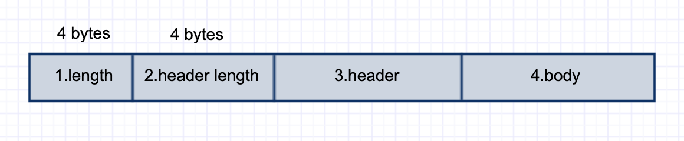

前言
本文中，会看看rocketmq中remoting模块中的代码。remoting模块相对而言会比较简单，主要是对netty进行了一层封装，至于netty的细节本文中就不细讲了，建议对netty有一些基本的了解再来看此文会比较好。我们其实可以看看像rocketmq这种成熟的消息队列中间件是如何使用netty这种高性能网络通信框架。
从功能上来看，分为NettyRemotingClient和NettyRemotingServer这两个类，两个有分别继承了抽象类NettyRemotingAbstract，顾名思义，NettyRemotingServer就是服务端，NettyRemotingClient就是客户端，分别来看一下
NettyRemotingServer
server端的启动
在broker启动时，会触发NettyRemotingServer.start():
this.defaultEventExecutorGroup = new DefaultEventExecutorGroup(
nettyServerConfig.getServerWorkerThreads(),
new ThreadFactory() {
private AtomicInteger threadIndex = new AtomicInteger(0);
@Override
public Thread newThread(Runnable r) {
return new Thread(r, "NettyServerCodecThread_" + this.threadIndex.incrementAndGet());
}
});
ServerBootstrap childHandler =
this.serverBootstrap.group(this.eventLoopGroupBoss, this.eventLoopGroupSelector)
.channel(useEpoll() ? EpollServerSocketChannel.class : NioServerSocketChannel.class)
.option(ChannelOption.SO_BACKLOG, 1024)
//打开地址复用
.option(ChannelOption.SO_REUSEADDR, true)
//关闭心跳
.option(ChannelOption.SO_KEEPALIVE, false)
.childOption(ChannelOption.TCP_NODELAY, true)
//64k
.childOption(ChannelOption.SO_SNDBUF, nettyServerConfig.getServerSocketSndBufSize())
//64k
.childOption(ChannelOption.SO_RCVBUF, nettyServerConfig.getServerSocketRcvBufSize())
//绑定端口，用于监听连接请求
.localAddress(new InetSocketAddress(this.nettyServerConfig.getListenPort()))
.childHandler(new ChannelInitializer<SocketChannel>() {
@Override
public void initChannel(SocketChannel ch) throws Exception {
ch.pipeline()
.addLast(defaultEventExecutorGroup, HANDSHAKE_HANDLER_NAME,
new HandshakeHandler(TlsSystemConfig.tlsMode))
.addLast(defaultEventExecutorGroup,
new NettyEncoder(),//outbound
new NettyDecoder(),//inbound
//Duplex
new IdleStateHandler(0, 0, nettyServerConfig.getServerChannelMaxIdleTimeSeconds()),
//Duplex
new NettyConnectManageHandler(),
//inbound
new NettyServerHandler()
);
}
});
if (nettyServerConfig.isServerPooledByteBufAllocatorEnable()) {
childHandler.childOption(ChannelOption.ALLOCATOR, PooledByteBufAllocator.DEFAULT);
}
try {
ChannelFuture sync = this.serverBootstrap.bind().sync();
InetSocketAddress addr = (InetSocketAddress) sync.channel().localAddress();
this.port = addr.getPort();
} catch (InterruptedException e1) {
throw new RuntimeException("this.serverBootstrap.bind().sync() InterruptedException", e1);
}
if (this.channelEventListener != null) {
this.nettyEventExecutor.start();
}
this.timer.scheduleAtFixedRate(new TimerTask() {
@Override
public void run() {
try {
NettyRemotingServer.this.scanResponseTable();
} catch (Throwable e) {
log.error("scanResponseTable exception", e);
}
}
}, 1000 * 3, 1000);
一步一步来看：
1.初始化defaultEventExecutorGroup，defaultEventExecutorGroup中的线程会用于ChannelHandler中的方法
2.初始化ServerBootstrap以及绑定服务端的端口，rpc服务的打开
3.处理服务端的超时请求
这边主要还是看看第2步
首先是用了reactor中的主从模型，在下在之前的文章中也写过reactor相关的文章，相关的两个线程组就是this.eventLoopGroupBoss, this.eventLoopGroupSelector。
接下来是对channel设置相关的参数。其中相关参数的意思就不细写了，网上也有比较多且细的文章。其实看的时候特别疑惑option和childoption的区别。后来一顿搜索，option适用于ServerChannel，而childOption适用于每个客户端连接时创建的channel。
接着再来看看channelPipeline相关的参数，当然也是最为重要的一块。channelPipeline是基于责任链模式设计的。主要分为OutboundHanndler和InBoundHanndler，OutboundHanndler就是出pipeline时要执行的handler，InBoundHandler相反。
ServerBootstrap初始化时设置了6个相关的Handler：
1.HandshakeHandler，用于处理使用了TLS协议连接，对于传输过程中是否通过TLS加密，其实取决于client端的配置。在Server端，这个Handler所起的作用就是是否强制使用TLS（默认设置为TLS使用与否都可以，相关请求均不会被Server拒绝）
2.NettyEncoder，内容编码，设计到rocketmq的传输协议，下文细写
3.NettyDecoder，内容解码，设计到rocketmq的传输协议，下文细写
3.IdleStateHandler，netty内部实现的一种心跳机制，以避免资源的浪费，这里就跳过了
4.NettyConnectManageHandler，管理客户端的连接，包括connect，disconnect等事件
5.NettyServerHandler，处理收到的RemotingCommand。这一块实现是在NettyRemotingClient和NettyRemotingServer的父类NettyRemotingAbstract中实现的，下文细写
NettyRemotingClient
client启动
@Override
public void start() {
this.defaultEventExecutorGroup = new DefaultEventExecutorGroup(
nettyClientConfig.getClientWorkerThreads(),
new ThreadFactory() {
private AtomicInteger threadIndex = new AtomicInteger(0);
@Override
public Thread newThread(Runnable r) {
return new Thread(r, "NettyClientWorkerThread_" + this.threadIndex.incrementAndGet());
}
});
Bootstrap handler = this.bootstrap.group(this.eventLoopGroupWorker).channel(NioSocketChannel.class)
.option(ChannelOption.TCP_NODELAY, true)
.option(ChannelOption.SO_KEEPALIVE, false)
.option(ChannelOption.CONNECT_TIMEOUT_MILLIS, nettyClientConfig.getConnectTimeoutMillis())
.option(ChannelOption.SO_SNDBUF, nettyClientConfig.getClientSocketSndBufSize())
.option(ChannelOption.SO_RCVBUF, nettyClientConfig.getClientSocketRcvBufSize())
.handler(new ChannelInitializer<SocketChannel>() {
@Override
public void initChannel(SocketChannel ch) throws Exception {
ChannelPipeline pipeline = ch.pipeline();
if (nettyClientConfig.isUseTLS()) {
if (null != sslContext) {
pipeline.addFirst(defaultEventExecutorGroup, "sslHandler", sslContext.newHandler(ch.alloc()));
log.info("Prepend SSL handler");
} else {
log.warn("Connections are insecure as SSLContext is null!");
}
}
pipeline.addLast(
defaultEventExecutorGroup,
new NettyEncoder(),
new NettyDecoder(),
new IdleStateHandler(0, 0, nettyClientConfig.getClientChannelMaxIdleTimeSeconds()),
new NettyConnectManageHandler(),
new NettyClientHandler());
}
});
this.timer.scheduleAtFixedRate(new TimerTask() {
@Override
public void run() {
try {
NettyRemotingClient.this.scanResponseTable();
} catch (Throwable e) {
log.error("scanResponseTable exception", e);
}
}
}, 1000 * 3, 1000);
if (this.channelEventListener != null) {
this.nettyEventExecutor.start();
}
}
初始化的过程和Server的启动基本类似。。。
当然，有一点需要注意的是，启动时是不会去连接Server端的。第一次连接的建立而是在第一次向服务端发送请求时。发送请求时会先从内存中根据server端的ip:port找到相应的通道，再写入内容。如果未找到相应的通道，则会进行connect请求
private final ConcurrentMap<String /* addr */, ChannelWrapper> channelTables = new ConcurrentHashMap<String, ChannelWrapper>();
报文相关
格式
在写格式之前，我们先来看看相关的实体类。对于每次请求，其实都是发送一个RemotingCommand对象，相关的参数为：
private int code;
private LanguageCode language = LanguageCode.JAVA;
private int version = 0;
//每次请求生成的唯一Id
private int opaque = requestId.getAndIncrement();
private int flag = 0;
private String remark;
private HashMap<String, String> extFields;
private transient CommandCustomHeader customHeader;
private SerializeType serializeTypeCurrentRPC = serializeTypeConfigInThisServer;
private transient byte[] body;
可以看到，其中header和body都是无法序列化的。
再来看看相关协议格式的设计，分为4部分，第1部分的length指2，3，4部分的总字节数，第2部分包括第3部分的序列化方式以及第3部分的字节数

编码
来看看上文中提到的NettyEncoder
public class NettyEncoder extends MessageToByteEncoder<RemotingCommand> {
private static final InternalLogger log = InternalLoggerFactory.getLogger(RemotingHelper.ROCKETMQ_REMOTING);
@Override
public void encode(ChannelHandlerContext ctx, RemotingCommand remotingCommand, ByteBuf out)
throws Exception {
try {
//header转byte
ByteBuffer header = remotingCommand.encodeHeader()
out.writeBytes(header);
byte[] body = remotingCommand.getBody();
if (body != null) {
out.writeBytes(body);
}
} catch (Exception e) {
log.error("encode exception, " + RemotingHelper.parseChannelRemoteAddr(ctx.channel()), e);
if (remotingCommand != null) {
log.error(remotingCommand.toString());
}
RemotingUtil.closeChannel(ctx.channel());
}
}
}
NettyEncode继承了MessageToByteEncoder，MessageToByteEncoder是netty提供的类，这边就不关心了。直接来看一下继承的encode()方法
我们可以看到，request分为两次发送
out.writeBytes(header);
out.writeBytes(body);
来看看encodeHeader()方法，相关的解释都在注释中写了
public ByteBuffer encodeHeader(final int bodyLength) {
// 1> header length size
int length = 4;
// 2> header data length
byte[] headerData;
//sum length
//headerEncode分为两部：1.通过反射将customHeader中的字段值放入extFields中。2.进行序列化，默认为json序列化方式
headerData = this.headerEncode();
length += headerData.length;
// 3> body data length
length += bodyLength;
//分配缓冲区
ByteBuffer result = ByteBuffer.allocate(4 + length - bodyLength);
// length
// 总长度
result.putInt(length);
// header length
//markProtocolType返回4个字节，第一个字节为header的序列化方案，后三个字节代表header长度，其实可以理解为上限为(2^24 -1)的整数
result.put(markProtocolType(headerData.length, serializeTypeCurrentRPC));
// header data
result.put(headerData);
result.flip();
return result;
}
解码
而对于NettyDecode，继承了netty的LengthFieldBasedFrameDecoder，直接来看看RemotingCommand.decode(final ByteBuffer byteBuffer)方法
public static RemotingCommand decode(final ByteBuffer byteBuffer) {
int length = byteBuffer.limit();
//第二部分的数据
int oriHeaderLen = byteBuffer.getInt();
//获取header的长度
int headerLength = getHeaderLength(oriHeaderLen);
byte[] headerData = new byte[headerLength];
byteBuffer.get(headerData);
//获取header的序列化方式，以及反序列化
RemotingCommand cmd = headerDecode(headerData, getProtocolType(oriHeaderLen));
//从缓存区读取bodyLength个字节
int bodyLength = length - 4 - headerLength;
byte[] bodyData = null;
if (bodyLength > 0) {
bodyData = new byte[bodyLength];
byteBuffer.get(bodyData);
}
cmd.body = bodyData;
return cmd;
}
上面注释中包括了协议中2，3，4部分的解析。第一部分在初始化NettyDecode时设置为跳过
public NettyDecoder() {
//第二个4就是跳过的byte数
super(FRAME_MAX_LENGTH, 0, 4, 0, 4);
}
发送一次Request
在前面看client端的代码的时候，在同步发送消息时，会触发invokeSync()函数，就简单看一下这个过程
//org.apache.rocketmq.remoting.netty.NettyRemotingAbstract#invokeSyncImpl
public RemotingCommand invokeSyncImpl(final Channel channel, final RemotingCommand request,
final long timeoutMillis)
throws InterruptedException, RemotingSendRequestException, RemotingTimeoutException {
//opaque是指唯一Id，由AtomicInteger.getAndIncrement();生成
final int opaque = request.getOpaque();
try {
final ResponseFuture responseFuture = new ResponseFuture(channel, opaque, timeoutMillis, null, null);
//在responseTable放入responseFuture，等待server执行完成命令
this.responseTable.put(opaque, responseFuture);
final SocketAddress addr = channel.remoteAddress();
channel.writeAndFlush(request).addListener(new ChannelFutureListener() {
@Override
public void operationComplete(ChannelFuture f) throws Exception {
//确定发送成功
if (f.isSuccess()) {
responseFuture.setSendRequestOK(true);
return;
} else {
responseFuture.setSendRequestOK(false);
}
responseTable.remove(opaque);
responseFuture.setCause(f.cause());
responseFuture.putResponse(null);
log.warn("send a request command to channel <" + addr + "> failed.");
}
});
//waitResponse内部通过countDownLatch实现阻塞等待
RemotingCommand responseCommand = responseFuture.waitResponse(timeoutMillis);
if (null == responseCommand) {
if (responseFuture.isSendRequestOK()) {
throw new RemotingTimeoutException(RemotingHelper.parseSocketAddressAddr(addr), timeoutMillis,
responseFuture.getCause());
} else {
throw new RemotingSendRequestException(RemotingHelper.parseSocketAddressAddr(addr), responseFuture.getCause());
}
}
return responseCommand;
} finally {
this.responseTable.remove(opaque);
}
}
来看看responseFuture.waitResponse(timeoutMillis)：
public RemotingCommand waitResponse(final long timeoutMillis) throws InterruptedException {
this.countDownLatch.await(timeoutMillis, TimeUnit.MILLISECONDS);
return this.responseCommand;
}
那么在什么时候countDownlatch会进行countDown操作呢？
我们接着来看看NettyClientHandler类，从NettyClientHandler#channelRead0()逐渐深入
public void processMessageReceived(ChannelHandlerContext ctx, RemotingCommand msg) throws Exception {
final RemotingCommand cmd = msg;
if (cmd != null) {
switch (cmd.getType()) {
case REQUEST_COMMAND:
processRequestCommand(ctx, cmd);
break;
case RESPONSE_COMMAND:
processResponseCommand(ctx, cmd);
break;
default:
break;
}
}
}
分别来看看request和response的处理过程
response
//NettyRemotingAbstract#processResponseCommand
public void processResponseCommand(ChannelHandlerContext ctx, RemotingCommand cmd) {
final int opaque = cmd.getOpaque();
final ResponseFuture responseFuture = responseTable.get(opaque);
if (responseFuture != null) {
responseFuture.setResponseCommand(cmd);
responseTable.remove(opaque);
if (responseFuture.getInvokeCallback() != null) {
//异步，去触发相关的callback（同步方式可以忽略这个方法）
executeInvokeCallback(responseFuture);
} else {
//同步的情况，需要放入response，并对countDownLatch进行countDown操作
responseFuture.putResponse(cmd);
responseFuture.release();
}
} else {
log.warn("receive response, but not matched any request, " + RemotingHelper.parseChannelRemoteAddr(ctx.channel()));
log.warn(cmd.toString());
}
}
response比较简单，就这些
request
如果在broker端，接收到request，那该怎么处理呢？
整理了一下，除去一些异常的处理，主要就是以下的代码
final Pair<NettyRequestProcessor, ExecutorService> matched = this.processorTable.get(cmd.getCode());
final Pair<NettyRequestProcessor, ExecutorService> pair = null == matched ? this.defaultRequestProcessor : matched;
final int opaque = cmd.getOpaque();
...
Runnable run = new Runnable() {
@Override
public void run() {
...
}
}
...
final RequestTask requestTask = new RequestTask(run, ctx.channel(), cmd);
pair.getObject2().submit(requestTask);
...
其中processorTable是用了策略模式，根据requestCode对不同的执行器以及对应的ExecutorService进行了一层映射
最后来看看run的实现，也是比较简单的
@Override
public void run() {
try {
RPCHook rpcHook = NettyRemotingAbstract.this.getRPCHook();
if (rpcHook != null) {
rpcHook.doBeforeRequest(RemotingHelper.parseChannelRemoteAddr(ctx.channel()), cmd);
}
//处理request逻辑
final RemotingCommand response = pair.getObject1().processRequest(ctx, cmd);
if (rpcHook != null) {
rpcHook.doAfterResponse(RemotingHelper.parseChannelRemoteAddr(ctx.channel()), cmd, response);
}
if (!cmd.isOnewayRPC()) {
if (response != null) {
response.setOpaque(opaque);
response.markResponseType();
try {
//往channel中写入response
ctx.writeAndFlush(response);
} catch (Throwable e) {
...
}
} else {
}
}
} catch (Throwable e) {
...
}
}
思考
至此，已经看完了rocketmq中remoting模块中一些基本功能的实现。在对于netty的使用上，还是很有收获的，复杂的网络问题都在netty中得到了很好的解决。之前简单了解过netty，感觉以后还是要再拜读一下。